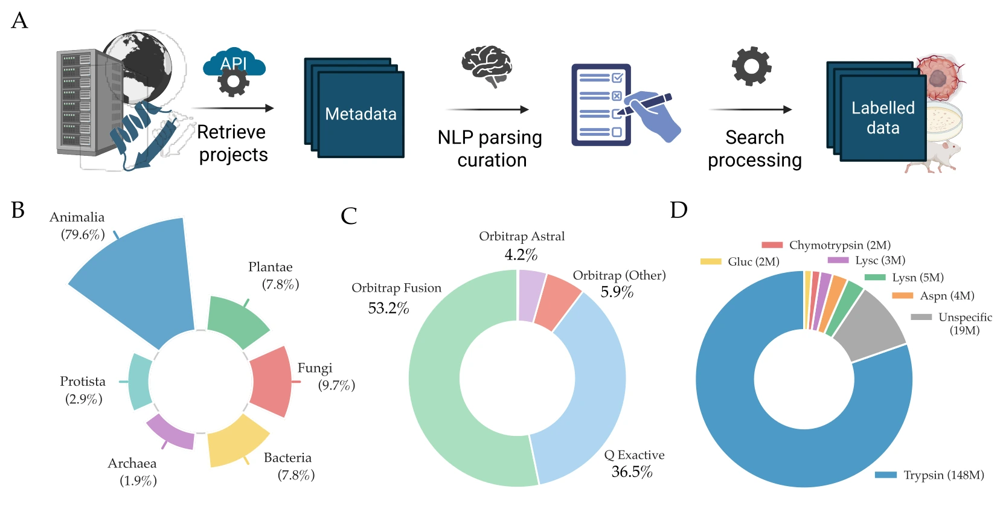
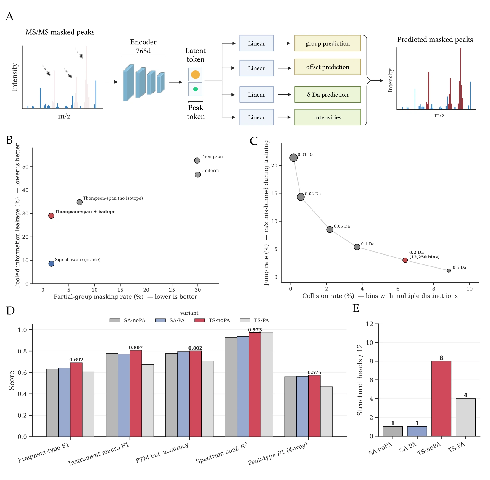
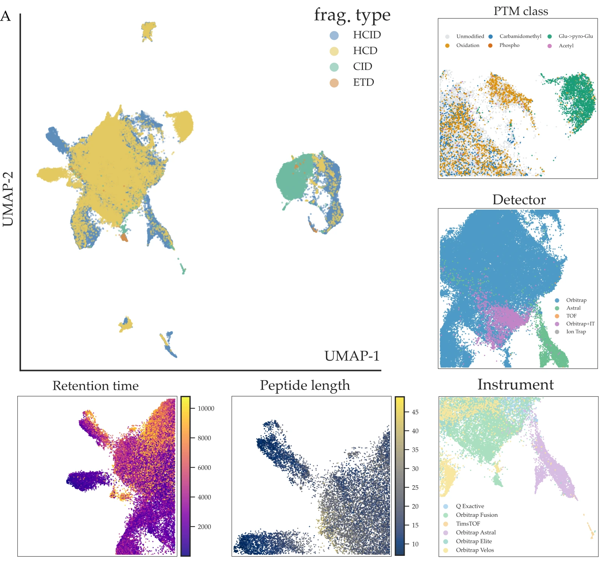
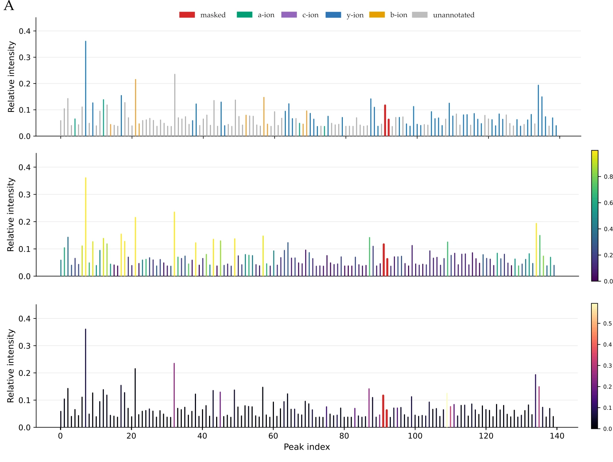
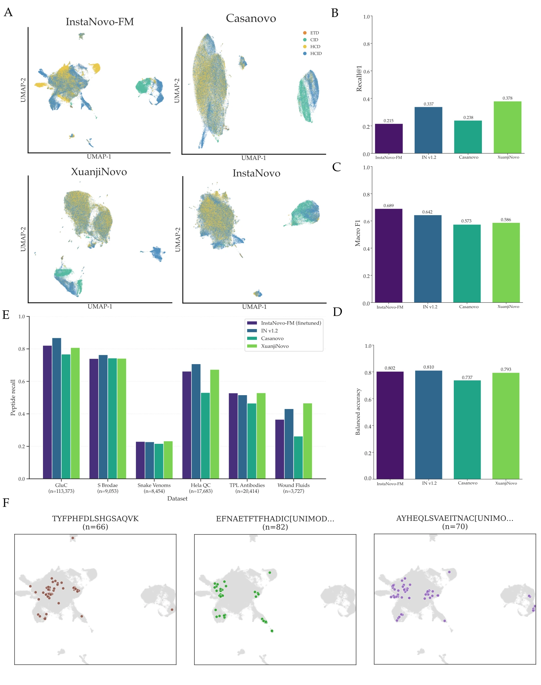
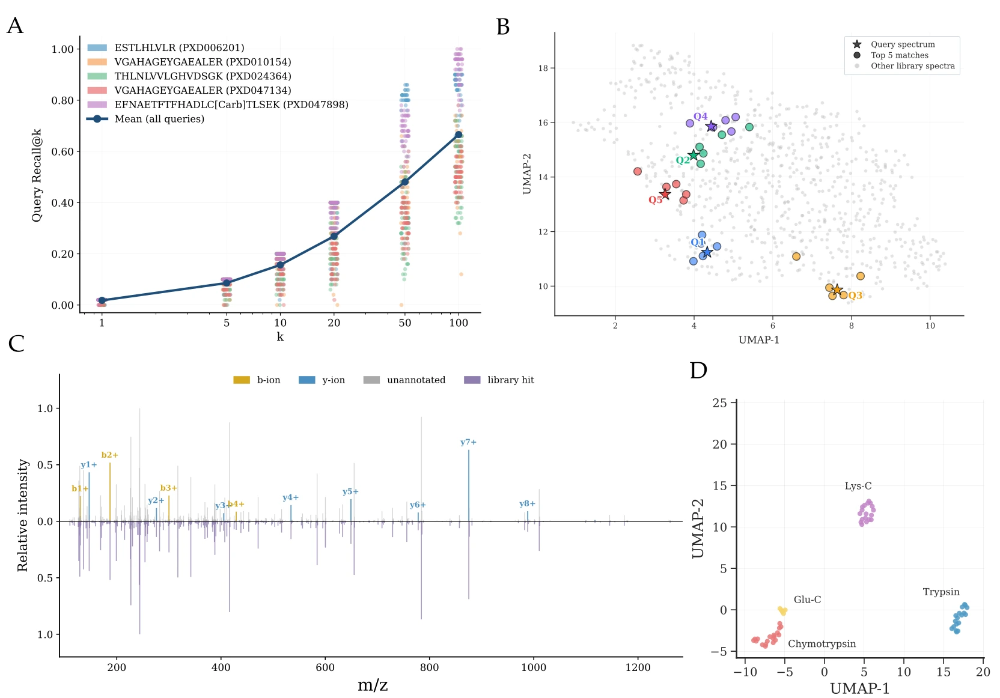

InstaNovo-FMa foundation model for tandem mass spectra
Mass spectrometry-based proteomics increasingly relies on machine learning. Yet, deep learning models in proteomics are trained for narrowly defined supervised tasks such as peptide identification, de novo sequencing or fragment intensity prediction, limiting transfer across downstream tasks. We have developed InstaNovo-FM, a self-supervised foundation model for bottom-up proteomics trained to reconstruct masked regions of tandem mass spectra. InstaNovo-FM was built on a diverse training corpus spanning 1.80 billion MS/MS spectra and 184.6 million high-confidence annotations. Model embeddings delineate fundamental experimental and biological properties, including fragmentation method, sequence properties and post-translational modifications, without requiring peptide labels. Furthermore, InstaNovo-FM enables downstream applications, including de novo peptide sequencing, database-free identification and analytical run classification. This foundation model establishes a unified representation space for peptide fragmentation spectra, enabling robust transferability across proteomics applications.
Keywords: proteomics · tandem mass spectrometry · self-supervised learning · foundation model · spectral representation learning · de novo sequencing
Public repositories hold petabytes of raw mass spectrometry data, but almost none of it is usable as a single training corpus: every submission carries its own instrument, protease, labelling chemistry and search configuration. We screened tens of thousands of project submissions using repository metadata and a custom GPT-4 metadata annotation. We selected approximately 100 projects for orthogonal diversity, and reprocessed raw data through one unified processing pipeline.
The result is ACFM — 1,802,272,487 MS/MS scans, and its labelled subset LCFM, 184,607,213 peptide-spectrum matches at run-specific 1% FDR. Progressively stricter curation for spectrum quality yields MCFM and HCFM for fine-tuning and post-training experiments. Splits are peptide-centric, so no peptide crosses a split or a confidence tier.

A tandem mass spectrum is an unordered set of continuous m/z–intensity pairs with no vocabulary, variable length, and a noise floor that dominates peak counts. Three domain problems had to be solved before masked reconstruction made sense.
Multi-scale encoding: m/z spans three orders of magnitude with meaning at scales from amino-acid masses (57–186 Da) down to isotope spacing (1.003 Da/z), so each peak is embedded with learnable frequencies at multiple log-spaced scales. Hiding the answer: the natural positional signal is the prediction target, so masked positions get a Gaussian-blurred m/z (σ = 10 Da) — an order of magnitude wider than isotope spacing — plus the original visible intensity. Classification, not regression: predicting m/z by regression is satisfied by memorising the intensity-weighted mean, so reconstruction is a choice among 12,250 bins at fixed 0.2 Da resolution, the best combined score of twelve candidate binning strategies.

Uniform masking spends most of the training gradient on noise, and it leaks: mask a fragment while any member of its isotope cluster stays visible and the model recovers it by arithmetic rather than chemistry. Thompson-span masking with isotope co-masking targets contiguous m/z-sorted spans of 3–4 peaks chosen by intensity-weighted sampling, and co-masks isotope partners atomically. The annotation-free TS·noPA variant leads on most structural and spectral probes and develops 8 of 12 structurally enriched attention heads, where the signal-aware variants concentrate specialisation in a single head.
If the model has learned the physics and biology in a spectrum, its embedding space should show it without ever being told. We computed UMAP embeddings of millions of spectra from the LCFM test set and interrogated the structure at decreasing scales.
At the broadest scale the space separates spectra by fragmentation method into well-defined lobes. Zooming into the HCD lobe reveals sub-structure by instrument family; within instrument sub-clusters, isobaric-tag spectra form compact clusters irrespective of biological origin; and at the deepest zoom, replicate spectra of the same peptide co-locate tightly while neighbouring peptides share precursor m/z and hydrophobicity. Like ESM2, the training objective was agnostic to every one of these categories — but here they are physical, experimental and chemical rather than evolutionary.
The same 100,000 spectra behind Figure 3, in the published layout. Colour by any of 23 categorical or 14 measured fields, filter, search a peptidoform, profile a region, or switch to the separate 3-component fit.

Descending from the spectrum to the individual peak, we see that peak representations separate b-ions, y-ions, precursor-related peaks and unannotated peaks. Integrated gradients then show which peaks drive a reconstruction. Of the high-attention peaks that standard b/y annotation leaves unexplained, 11.2% match a defined off-database fragment species within 10 ppm, dominated by internal fragments, then side-chain d-/w-ions. The model was never told these peaks exist; it learned their relevance from spectral context, because they co-vary with the peaks it is trying to reconstruct.

Under one uniform linear-probe protocol across four frozen embedding spaces — InstaNovo v1.2, Casanovo, XuanjiNovo and InstaNovo-FM — the annotation-free model leads on the acquisition and physical properties: instrument macro F1 0.804 against 0.690 / 0.538 / 0.516, and fragmentation macro F1 0.689 against 0.642 / 0.573 / 0.586. It does not lead everywhere: XuanjiNovo is ahead on duplicate retrieval and hydrophobicity, and InstaNovo v1.2 on charge and modification class.
The other three encoders were all trained with peptide-sequence labels, and InstaNovo-FM reaches comparable linear decodability with none. On de novo sequencing across six biological hold-out sets, fine-tuning from InstaNovo-FM is competitive, and the frozen encoder retains 85% of fine-tuned peptide recall on average.

Database-free identification. Used as a retrieval index over annotated reference spectra, the frozen embeddings recover a true same-peptide replicate as nearest neighbour with Recall@1 0.215 (mAP@20 0.076), rising to about 0.66 by k = 100. Applied to a held-out project the model never saw in pretraining, the highest-similarity rescues are unambiguous: cosine 0.97–0.99 with 90–100% b/y residue coverage of the assigned peptide. Embedding proximity, model confidence and fragment-ion evidence converge on the same peptide.
Modification detection. Linear probes on frozen embeddings detect phosphorylation at AUROC 0.988 and glycosylation at 0.9999, and resolve five-way N-glycan family at macro-AUROC 0.915 — without modification-specific pretraining. Detectability tracks the size of the mass shift: deamidation of asparagine, near-isobaric with the M+1 isotope at +0.98 Da, reaches only 0.67.
Run-level classification. Aggregating per-spectrum embeddings per LC-MS/MS run classifies digestion enzyme across 61 runs, with no peptide or protein identifications at all — and two further cohorts cluster by biological condition.

Model card
| Architecture | Encoder-only transformer; no positional encoding, no pairwise-attention bias |
|---|---|
| Size | d = 768 · 12 layers · 12 heads (head dim 64) · FFN 3072 · ~89.5 M parameters |
| Peak encoding | Multi-scale sinusoidal m/z with learnable log-spaced frequencies; intensity via a separate MLP branch |
| Masked positions | Gaussian-blurred m/z (σ = 10 Da) + original visible intensity; no learnable mask token |
| Objective | Hierarchical masked reconstruction — group softmax (245) × offset softmax (50) over 12,250 bins at 0.2 Da; auxiliary intensity head (pretraining only) |
| Masking | Thompson-span, 3–4 peak contiguous spans, isotope co-masking; 30% fragment-group budget (~26.6% of peaks) |
| Spectrum embedding | Mean of final-layer hidden states over non-padding peak tokens |
| Training | ~230,000 steps on LCFM ≈ 117 M spectra ≈ 2 epochs; batch 1,024; fp16 |
| Preprocessing | Drop peaks below 1% of base peak, keep top 200 by intensity, sqrt-transform, ℓ2-normalise |
| Compute | EuroHPC JU allocation EHPC-AI-2024A01-086, MareNostrum 5 |